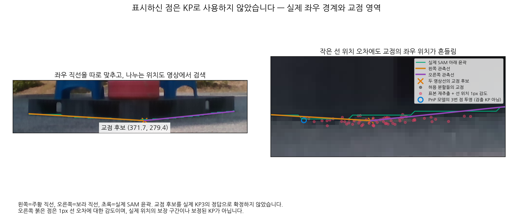

좌우 경계 직선과 교점 영역 확인
표시하신 점은 KP의 위치로 사용하지 않았습니다. 이미 보정된 양 끝 B7·B2로 아래 윤곽 구간을 선택하고, 좌우를 나누는 위치도 실제 영상 표본에서 검색했습니다.

이미지를 누르면 원본 크기로 볼 수 있습니다. 주황·보라=관측 직선, 초록=SAM 윤곽, 회색=교점 후보, 빨강=선 오차 감도.
| 계산 | 원본 이미지 좌표 |
|---|
| 대표 교점 | (371.69, 279.44) |
| 허용 분할들의 교점 | x 367.39–381.68px |
| 선 위치 1px 감도 포함 | x 354.96–397.31px |
276개 RGB·마스크 표본, 분할 후보 204개 중 관측 품질과 구간 검사를 통과한 35개. 1px 감도 범위는 실제 위치의 보장 구간이 아닙니다.
아래 윤곽은 하나의 직선보다 좌우 두 직선으로 잘 설명됩니다. 다만 완만하고 둥근 외곽을 직선으로 근사한 교점이므로, 이것만으로 실제 KP3와의 대응을 확정하지 않습니다.
두 선을 실제 PnP에 부분 관측으로 연결했습니다. 각 선에 수직인 오차를 soft하게 추가하고, 좌우 위치는 다른 보정된 KP·파렛트 크기·기존 자세 prior와 함께 정합니다. 전체 관측 윤곽의 유한 범위·모델 가시성·화면 범위 조건도 적용합니다.
모델의 3번 점 투영: (353.92, 278.99) → (354.48, 279.33), 이동 0.655px.
파랑 원은 PnP 모델 점이며 영상에서 검출한 KP로 취급하지 않습니다. U는 그대로이고, 완전한 2D 관측을 만들지 않았습니다. 기존 B/I와 가중치·O/T 영역·native/Q는 유지했으며 S는 PnP 투영으로만 계산합니다. 선을 따르는 범위는 관측한 아래 윤곽 전체로 넓게 남겼습니다. 가중치 0은 기존 솔버와 정확히 같은 결과입니다.
현재 데이터의 CAL 46장에서는 이 새 관측 조건에 맞는 사례가 0개였습니다. 따라서 오차 예산은 기존 CAL의 fallback-B 예산을 보수적으로 빌린 가정이며, 새 관측의 오차 모델을 학습·검증한 결과가 아닙니다. 같은 윤곽을 재사용하므로 독립 정보나 정확한 자세 확률을 보장하지 않습니다. 이 사례는 재사용 TEST이며 별도 축·코너 등록 불일치를 해결한 결과도 아닙니다.
좌표·이미지 근거 JSON · PnP 비교 결과 · 전체 분할·표본 재추출 결과